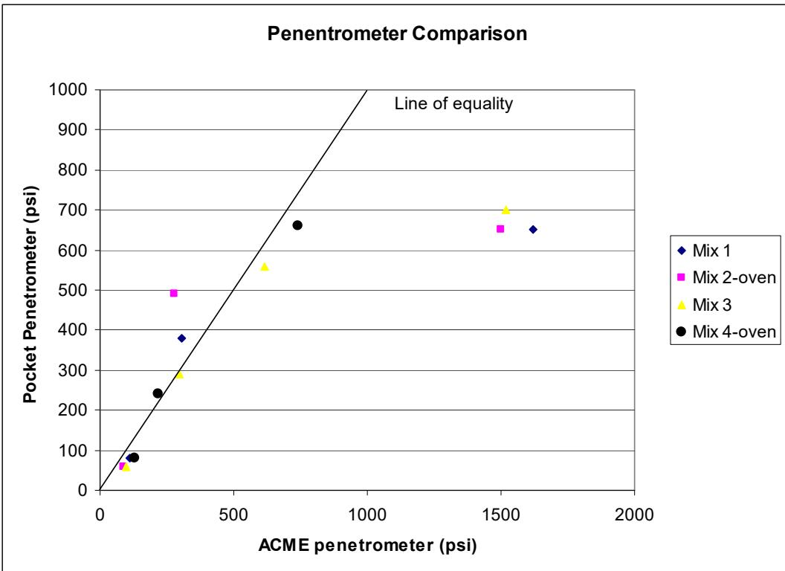
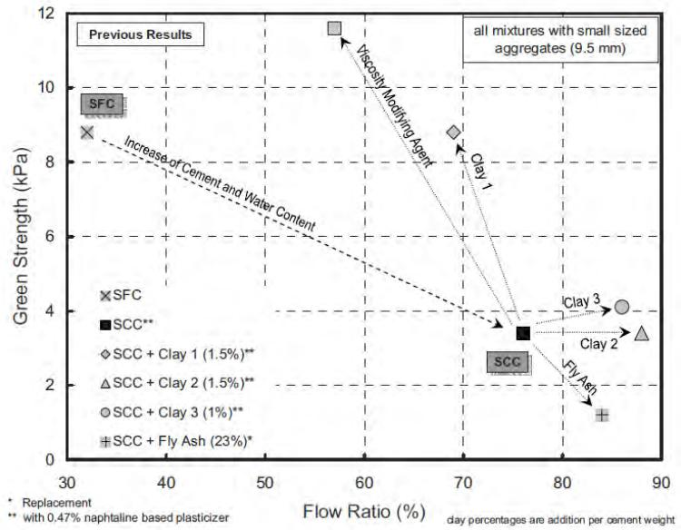
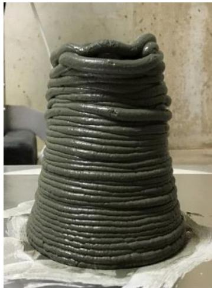
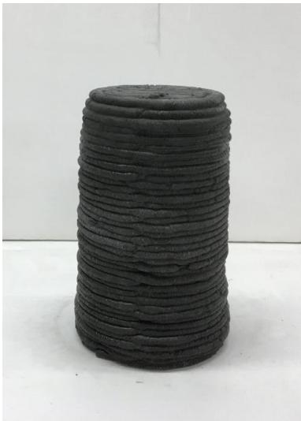
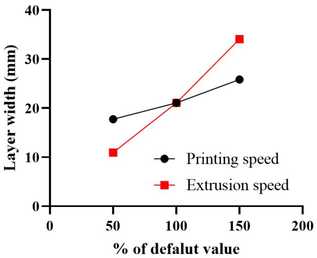

Workability of Concrete
Workability of concrete is the property that determines the ease and homogeneity with which fresh concrete can be mixed, placed, consolidated, and finished without segregation. It is fundamentally a rheological concept governed by parameters such as flowability, viscosity, yield stress, and thixotropy, reflecting the balance between internal friction among particles and the lubrication provided by the cementitious paste [1] [2]. The magnitude of workability is primarily controlled by the water-to-cement ratio and aggregate characteristics, including gradation, shape, and surface texture, which collectively influence the mix’s consistency and cohesiveness [3] [4] [5]. Chemical admixtures and supplementary cementitious materials modify these properties by altering paste viscosity and inter-particle friction, allowing engineers to adjust flow characteristics without compromising the structural integrity of the hardened material [1] [5]. Achieving optimal workability requires balancing sufficient fluidity for placement with adequate green strength and cohesion to maintain shape and prevent segregation before the concrete sets [2] [6].
Workability of Concrete covers the suite of properties that determine how easily fresh concrete can be mixed, placed, and consolidated without segregation. For stiff or dry mixes where standard tests fail, the Cabrera Slump Value quantifies consistency, while the Vibrating Slope Apparatus (VSA) measures flow distance under controlled vibration to provide a specific rheological index for low-slump conditions. The VKelly Test offers a direct field assessment by measuring the penetration rate of a weighted, vibrating sphere to evaluate flow characteristics. Compaction effort serves as another key indicator: the Gyratory Compactor (Concrete) measures energy required under axial and rotational shear loads, whereas the Workability Energy Index quantifies the mechanical effort needed to densify roller-compacted concrete, reflecting cohesive resistance. The Compaction Densification Index takes this further by measuring the specific effort to transition pervious concrete from its initial state to a target void content. Beyond physical testing, Excess Paste Theory defines workability as a function of cementitious paste volume relative to aggregate void space, requiring sufficient paste to fill gaps and coat surfaces. Finally, Green Strength quantifies the fresh concrete’s capacity to maintain geometric integrity and resist deformation under self-weight or external loads prior to hardening, serving as a critical indicator of cohesive stability and shape-holding capability.
Sources (17)
Sub-concepts (8)
Key findings
- Fly ash reduced water demand and enhanced fresh-mix mobility, whereas ground-granulated blast-furnace slag increased the water required for a given consistency [3] [7].
- Incorporating supplementary cementitious materials such as slag or fly ash consistently improved workability and lowered the required compaction effort for pervious concrete [8] [9].
- The combined use of fly ash and slag restored workability to levels comparable with ordinary Portland cement concrete [3].
- Mixing efficiency and procedure significantly affected fresh-state performance, with multi-step mixing improving microstructure and interfacial transition zone quality [5].
- Excessive mixing degraded softer aggregates and lowered entrapped air, compromising workability despite sufficient time being essential for uniformity [5].
- Conventional admixture dosages were inadequate for roller-compacted concrete because low water and paste content limited chemical action, requiring higher dosage levels [10].
- Polycarboxylate reducers achieved up to about thirty percent water reduction but became overly cohesive, while lignosulfonate reducers promoted segregation [10].
- Synthetic-detergent air-entrainers introduced significant air yet lacked retardation, making them the best option for finishability among tested agents [10].
Supplementary Cementitious Materials And Admixture Effects
Evidence: 15 reports (12 primary)
Supplementary cementitious materials and chemical admixtures are introduced to fresh concrete primarily to modify its rheological properties, such as viscosity and yield stress, thereby influencing the ease of mixing, placing, and finishing [3] [1]. The underlying mechanism involves altering inter-particle friction and paste lubrication; for instance, spherical particles can act as micro-ball bearings to facilitate flow, while high-surface-area materials may increase water demand unless compensated by specific chemical additives [1]. These components allow engineers to balance workability against durability and strength, enabling the use of lower water-to-cement ratios while maintaining adequate flow through the action of superplasticizers or other viscosity-modifying agents [3] [1].
Research problem — Engineers lack reliable predictive models and specifications for how supplementary cementitious materials alter concrete workability under varying temperature conditions, leading to unpredictable slump loss and set times that compromise placement and durability [11] [3]. The introduction of alternative binders and additives creates conflicting demands between maintaining fresh-state flowability and achieving early-age strength or specific functional properties, such as electrical conductivity or permeability [7] [8] [9] [12] [2]. Traditional workability assessment methods are insufficient for modern low-slump and specialized concrete mixes, creating a need for quantitative metrics that can predict compaction energy requirements and real-time field performance [13] [9] [2] [6] [5].
The figure below illustrates the correlation between the pocket penetrometer and the Acme penetrometer.

Correlation between the pocket penetrometer and the Acme penetrometer [5]The figure displays a scatter plot comparing measurements from two different testing devices, plotting Pocket Penetrometer values against ACME penetrometer values for four distinct concrete mixtures.
State of the art — Modern practice treats workability as a system-wide performance target managed through the synergistic selection of supplementary cementitious materials and targeted admixture dosages, moving beyond simple Portland cement baselines to optimize flow while controlling early-age thermal and strength development [3] [7] [5]. The field has shifted toward performance-based specifications that integrate volumetric design metrics with rheological diagnostics to replace traditional slump tests, which are increasingly viewed as insufficient for capturing the nuances of stiff or high-viscosity mixes [13] [9] [6]. Current research and implementation focus on balancing the water-demand reduction benefits of materials like fly ash against the increased demand of finer additives such as silica fume, while deploying continuous sensor monitoring to enable real-time adjustments during placement [11] [1] [13].
Findings from the reports
- Ternary blends containing both fly ash and slag offset their opposing effects to produce concrete with flowability comparable to ordinary Portland cement mixes [3] [5].
- Fly ash functions as a water-reducing lubricant that enhances flowability, whereas ground-granulated blast-furnace slag increases water demand and does not improve workability [3].
- Higher curing temperatures mitigate slump loss and extend the usable placement window for concrete containing supplementary cementitious materials [3].
- Mixing procedure and mixer type are the dominant determinants of fresh-state performance, with multi-step mixing improving microstructure but risking over-mixing that degrades aggregate integrity [5].
- Class C fly ash raises mortar flow while Class F fly ash leaves it unchanged or reduces it, and fine slag lowers both flow and set times due to increased viscosity [7].
- Metakaolin significantly increases water demand beyond standard limits, necessitating additional high-range water-reducer admixture to maintain workability [7].
- Semi-flowable self-consolidating concrete exhibits lower viscosity than conventional mixes because it contains less coarse aggregate, making the force required for flow inversely proportional to its slump [2].
- Increasing nano-clay content considerably increases yield stress and thixotropy in semi-flowable concrete, while high-range water reducers suppress these effects to balance easy flow with green strength [2].
- Polycarboxylate-based chemical admixtures reduce mixing water by up to thirty percent and improve finishability in roller-compacted concrete, whereas air-entraining admixtures introduce significant air but offer little workability retention [10].
- Conventional slump testing is ineffective for quantifying pervious concrete workability, requiring alternative methods like gyratory compaction to generate repeatable density-gyration curves [9].
- Workability in pervious concrete increases with higher binder-to-aggregate ratios, while longer mixing times degrade placeability and increase the energy required for compaction [9].
- Concrete mixes require a paste volume of at least one-and-a-quarter to one-and-a-half times the void volume of the aggregate to achieve workable fresh concrete, below which water-reducing admixtures have no effect [4].
- Pervious concrete mixes containing fly ash exhibit superior workability compared to those incorporating slag or limestone powder due to differences in specific surface area and water adsorption [8].
- Type K expansive cement reduces workability by increasing total surface area and consuming water for ettringite formation, requiring superplasticizers to recover slump [1].
- Polyvinyl alcohol macrofibers markedly lower workability due to high water absorption, while polypropylene microfibers raise water demand and limit practical dosage [1].
- Super-absorbent polymers initially absorb mix water causing early slump loss but subsequently release stored water to mitigate further slump loss and improve workability retention over time [14].
Novelty & rigor — Research has established quantitative thresholds for paste-to-aggregate void ratios that define the minimum binder content required to achieve workability in mixes containing supplementary cementitious materials, distinguishing these requirements from those of plain Portland cement [4]. Systematic experimental comparisons reveal distinct trade-offs between different supplementary cementitious materials, such as fly ash acting as a water reducer while slag increases water demand, necessitating tailored admixture strategies to maintain flowability in ternary blends [3]. Novel frameworks have been developed to predict fresh-state performance from the chemical composition of cementitious systems and to integrate real-time rheological sensing with mix-design models, moving beyond subjective slump tests toward objective, continuous workability control [7] [13].
Reported values
| Parameter | Value | Context | Source |
|---|---|---|---|
| entrained air | 11% | AEA (air-entraining admixtures) | [10] |
| water reduction | 0-24% | ligno-based water reducers | [10] |
| curing temperature | 50°F | final state for binary cement concrete set time test | [3] |
| curing temperature | 70°F | initial state for binary cement concrete set time test | [3] |
| three-day compressive strength increase | 31% to 2,500% | following the recommended water reducer dosage rates | [7] |
| paste-to-voids ratio | 1.25 to 1.5 times | minimum workability requirement | [4] |
| paste-to-voids ratio | 125 percent% | mixtures containing SCMs | [4] |
| fresh unit weight | 115.9 lb/yd3 | pervious concrete mixture with 15% slag replacement | [8] |
| maximum practical dosage | 0.125% | PP microfibers | [1] |
| air content | 5.0% to 5.8% | all concrete mixes | [14] |
| binder-to-aggregate ratio | 24% | optimal mix selection criteria | [9] |
| curb height | 8 in. | high VKelly index mixtures | [15] |
| compaction factor | 95% | SFSCC performance criteria | [2] |
| air content difference (Type B meter vs SAM) | 0.1% | average difference between Type B air meter and SAM | [6] |
| slump | 0.75 to 1 inch | concrete at paver arrival | [5] |
43 more distinct values omitted here; the full span-verified set is in the quantities sidecar.
Across the reviewed reports, supplementary cementitious materials (SCMs) exert divergent effects on concrete workability depending on their specific physicochemical properties: fly ash generally acts as a lubricant that reduces water demand and enhances flowability, whereas ground-granulated blast-furnace slag (GGBFS) often increases viscosity and water requirement due to its finer particle size. While fly ash consistently improves workability metrics across various concrete types—including roller-compacted and pervious concretes—slag can diminish fresh-state performance unless balanced with other materials or admixtures to offset its water-absorbing nature. The integration of SCMs frequently necessitates precise calibration of high-range water reducers and superplasticizers to counteract increased water demand or delayed setting times, highlighting a critical trade-off between achieving sufficient flowability and maintaining early-age strength development. Beyond chemical admixtures, the workability of mixes containing SCMs is fundamentally governed by the volume of paste relative to aggregate voids; blends with fly ash require less excess paste than plain cement mixes to achieve workability, whereas insufficient paste volume renders water reducers ineffective regardless of dosage. [3] [7] [4] [8] [1] [9]
The figure below illustrates these effects by showing how specific supplementary cementitious materials influence concrete workability.
![Effects of SCMs on workability (B24”x”-S10-CS1.5-w/c0.29) Effects of SCMs on workability (B24[”x”]-S10-CS1.5-w/c0.29) [9]
{kind=link}
The figure displays two bar charts comparing the Workability Energy Index (WEI) and Compaction Densification Index (CDI) across various mixtures of Portland Cement, Slag, and Fly Ash.
Implications — Mix designers must proactively retune water demand and chemical admixture dosages to offset the divergent rheological effects of different supplementary cementitious materials, such as the flow-enhancing nature of fly ash versus the stiffening tendency of slag [3] [7] [8]. Construction schedules and curing protocols must be adjusted to accommodate the extended set times and reduced early-age strength development associated with high volumes of supplementary cementitious materials [3] [7] [15]. Practitioners should adopt integrated performance-based mix designs that balance fresh-state flowability with early-age strength and durability requirements rather than relying on isolated workability metrics [2] [6].
The following figure illustrates how these mineral and chemical admixtures influence the flowability and green strength of fresh concrete.

Effect of mineral and chemical admixtures on flowability and green strength of fresh concrete with small-sized aggregates [2]The figure plots Green Strength against Flow Ratio to demonstrate the rheological trade-offs between fluidity and early-age structural integrity in self-consolidating concrete mixes. Arrows indicate that adding viscosity modifying agents or clay increases green strength while decreasing flowability, whereas fly ash addition enhances flowability at the expense of green strength.
Limitations — The variability of supplementary cementitious material sources and proportions, combined with the lack of standardized specifications for cold-weather performance, limits the reliability of current workability predictions [3]. Admixture interactions are highly sensitive to water content and dosage levels, where minor fluctuations can cause dramatic changes in air entrainment or excessive stickiness that laboratory studies may not fully capture [10] [7]. The use of specialized rheological assessment equipment and field-based workability tests remains constrained by a lack of standardization, operator proficiency, and inconsistent data collection protocols across different mix designs [2] [6].
Heat Evolution Monitoring
Evidence: 1 report (1 primary)
Research problem — The absence of a practical, rapid, and low-cost field test for monitoring the heat evolution of fresh concrete prevents engineers from obtaining timely data to adjust mix designs or admixture dosages on-site [16]. Reliance on expensive, complex laboratory calorimeters that require days to produce results leaves practitioners unable to mitigate risks associated with unexpected stiffening, poor placement, and thermal cracking during construction [16].
Findings from the reports
- Monitored concrete heat evolution served as a direct proxy for workability-related properties, including setting time, early-age strength gain, curing requirements, and thermal cracking risk [16].
Implications — Practices should adopt rapid, inexpensive calorimetric testing to monitor heat evolution, as this data directly predicts workability loss and setting behavior [16]. Specifiers must develop performance-based standards that prioritize affordability alongside accuracy to enable the widespread use of field-ready monitoring devices [16].
The semi-adiabatic calorimeter–IQ drum shown below is an example of the field-ready monitoring device recommended for tracking heat evolution.
 Semi-adiabatic calorimeter–IQ drum (www.quadreliservice.com) [16]
Semi-adiabatic calorimeter–IQ drum (www.quadreliservice.com) [16]
The image displays a large, cylindrical metal vessel equipped with external sensors and wiring. This apparatus is identified as a semi-adiabatic calorimeter used for monitoring heat evolution in concrete samples.
Limitations — The field currently lacks a unified method for translating heat-signature curves into reliable workability assessments, making interpretation difficult for engineers [16]. Many inexpensive, rapid calorimeters that could be deployed in practice have undocumented accuracy and sensitivity, while commercially available equipment providing robust data is often prohibitively expensive [16].
Workability Trade-offs in 3-D Printable Concrete
Evidence: 1 report (1 primary)
Research problem — Formulating a concrete mix for additive manufacturing requires balancing conflicting rheological demands, specifically achieving sufficient flowability and extrudability while maintaining the buildability needed to prevent structural collapse during layer deposition [17]. Current mix designs often fail to provide a balanced workability profile, where adjustments intended to enhance one property, such as using high superplasticizer dosages for flow, inadvertently degrade shape stability and lead to defects like slumping or cracking [17].
State of the art — Contemporary practice defines the workability of 3-D printable concrete as a suite of interrelated fresh-state properties, requiring a simultaneous balance between sufficient flowability for extrusion and adequate early stiffness to support subsequent layers [17]. To resolve the inherent conflict between extrudability and buildability, mix designs typically employ low water-to-binder ratios combined with tailored admixture packages of superplasticizers and viscosity-modifying agents [17]. Current research focuses on optimizing these admixture dosages to suppress air entrapment defects while maintaining the delicate balance among flowability, extrudability, printability, buildability, and open time [17].
The following figure illustrates how these mix designs influence the buildability of printable mortars through the resulting shape of printed objects.

Buildability of printable mortars illustrated by the shape of printed objects. [17]The figure displays a cylindrical structure formed by extruding material in horizontal layers, which has collapsed and spread outward at its base. This distortion demonstrates poor buildability, where the fresh concrete slumped under its own weight due to high flow values during printing.
Findings from the reports
- Demonstrated that workability in 3-D printed concrete is governed by a delicate balance among flowability, extrudability, buildability, and open time, requiring simultaneous optimization of these distinct attributes rather than reliance on conventional mold-cast metrics [17].
- Showed that material modifiers shift the workability balance: silica fume or viscosity-modifying agents improve shape stability but reduce extrusion ease, while superplasticizers increase flowability and extrusion smoothness at the cost of buildability [17].
- Revealed that very low water-to-binder ratios hinder flowability and extrudability, whereas modest increases improve them but risk excessive slump and shape distortion during printing [17].
- Observed that excessive flow leads to fresh-state defects such as air-bubble pop-outs, discontinuities, and slumping, highlighting the trade-off between pumpability and stiffness [17].
- Found that extrusion speed dominates dimensional accuracy, with higher speeds widening layers and reducing surface quality, underscoring the need to co-optimize material formulation and machine settings [17].
Novelty & rigor — The research introduces a streamlined mix-design strategy that utilizes a highly flowable, rapid-set grout as a partial cement replacement to simultaneously achieve extrusion-ready flow and sufficient buildability [17]. This approach eliminates the conventional reliance on fine-tuning multiple admixtures such as viscosity-modifying agents, superplasticizers, and accelerators, thereby simplifying the formulation process for 3D printable concrete [17]. The methodology is reproducible through a precise mixing sequence and specific binder proportions that control open time and ensure consistent workability throughout the printing window [17].
Reported values
| Parameter | Value | Context | Source |
|---|---|---|---|
| flow spread | 176 mm | Mix 0.32-G20 after 60 min rest, when printing/extrusion was completed | [17] |
| flow spread | 180 mm | Mix 0.32-G20 after 40 min rest, when printing/extrusion started | [17] |
| flow spread | 220 mm | Mix 0.32-G20 immediately after completion of mixing | [17] |
| silica fume dosage | 2.5% % by weight of binder | Mix 0.32-G20 | [17] |
| water-to-binder ratio | 0.32 | Mix 0.32-G20 | [17] |
The following figure illustrates how variations in the water-to-binder ratio affect the printability of these specific mix designs.

A cylindrical specimen of concrete printed using the 0.32-G20 mix design. [17]The image displays a single, dark grey cylinder composed of distinct horizontal layers, representing an object produced by extrusion-based additive manufacturing. This specimen demonstrates the ‘green-strength’ and shape retention capabilities required for concrete printing, as it maintains its vertical structure without slumping or collapsing under its own weight. The successful formation of this object illustrates how specific water-to-binder ratios and grout proportions influence the workability necessary to achieve a smooth extrusion and structural integrity.
Implications — Concrete workability in additive manufacturing must be managed as a suite of interrelated demands rather than a single static property, requiring integrated optimization of material composition and printer parameters to balance extrudability with early stiffness [17]. The prevalence of defects like air-bubble pop-outs and anisotropic strength necessitates the development of standardized testing protocols that capture both rheological performance and time-dependent shape stability, shifting practice away from trial-and-error toward systematic mix design [17]. Future research and construction practices should prioritize defining acceptable open-time windows and establishing coordinated extrusion timing with post-print protection measures to ensure reliable layer adhesion and dimensional accuracy [17].
The following figure illustrates how variations in printing and extrusion speeds directly influence the resulting layer width.

Effects of printing speed and extrusion speed on the layer width [17]The figure plots layer width against percentage changes in default values for two distinct parameters: printing speed (black circles) and extrusion speed (red squares). Both variables show a positive correlation with layer width, but the plot indicates that extrusion speed has a steeper slope and thus a greater impact on geometry than printing speed.
Limitations — Achieving consistent batch-to-batch uniformity is challenging because minor variations in flowability and stiffening behavior can significantly alter the final properties of the printed concrete [17]. Optimizing workability involves conflicting trade-offs where additives that enhance extrudability often compromise shape stability, while those ensuring stability can hinder flow [17]. Current findings are limited to small-scale laboratory environments and may not accurately reflect the performance or constraints encountered in full-scale structural applications [17].
Related concepts
In this hierarchy
- Parent: Fresh Concrete, Workability & Mixing
- Child: Cabrera Slump Value
- Child: Compaction Densification Index
- Child: Excess Paste Theory
- Child: Green Strength
- Child: Gyratory Compactor (Concrete)
- Child: VKelly Test
- Child: Vibrating Slope Apparatus (VSA)
- Child: Workability Energy Index
Related by shared evidence
- Supplementary Cementitious Materials — shares 18 reports
- Cementitious Materials & Chemistry — shares 15 reports
- Concrete Materials & Mixtures — shares 15 reports
- CP Tech Center Reports — shares 15 reports
- Air Entraining Agent — shares 14 reports
- Cement Hydration — shares 14 reports
- Fly Ash — shares 14 reports
- Concrete Curing — shares 12 reports
Similar topics
- Concrete Materials & Mixtures
- Chemical Admixtures for Concrete
- Cement Hydration
- Supplementary Cementitious Materials
- Concrete Curing
- Fresh Concrete, Workability & Mixing
- Hydration, Heat & Maturity
- Performance-Based Mix Design
References
- B. Shafei, P. Taylor, B. Phares, and M. Kazemian, "Fiber-Reinforced Concrete for Bridge Decks," Bridge Engineering Center, Iowa State University, Ames, IA, Rep. TR-767, 2021. [Online]. Available: https://www.intrans.iastate.edu/wp-content/uploads/2021/12/fiber-reinforced_concrete_in_bridge_decks_w_cvr.pdf
- K. Wang, S. P. Shah, J. Grove, P. Taylor, P. Wiegand, B. Steffes, G. Lomboy, Z. Quanji, L. Gang, and N. Tregger, "Self-Consolidating Concrete—Applications for Slip-Form Paving: Phase II," National Concrete Pavement Technology Center, Ames, IA, Rep. TPF-5(098), 2011. [Online]. Available: https://www.intrans.iastate.edu/wp-content/uploads/2018/03/SCC_Phase_2_final_report-edited_wcover.pdf
- K. Wang and Z. Ge, "Evaluating Properties of Blended Cements for Concrete Pavements," Department of Civil, Construction and Environmental Engineering, Iowa State University, Ames, IA, 2003. [Online]. Available: https://www.intrans.iastate.edu/wp-content/uploads/2018/03/blended_cements-1.pdf
- P. Taylor, F. Bektas, E. Yurdakul, and H. Ceylan, "Optimizing Cementitious Content in Concrete Mixtures for Required Performance," National Concrete Pavement Technology Center, Ames, IA, 2012. [Online]. Available: https://www.intrans.iastate.edu/wp-content/uploads/2018/03/taylor_ocm_w_cvr2.pdf
- S. Schlorholtz, K. Wang, J. Hu, and S. Zhang, "Materials and Mix Optimization Procedures for PCC Pavements," CTRE, Iowa State University, Ames, IA, Rep. TR-484, 2006. [Online]. Available: https://www.intrans.iastate.edu/wp-content/uploads/2018/03/mco-final.pdf
- J. Gross, J. Weiss, T. Ley, P. Taylor, N. Weitzel, T. Van Dam, G. Smith, and C. Jones, "Performance-Engineered Concrete Paving Mixtures," National Concrete Pavement Technology Center, Iowa State University, Ames, IA, Rep. TPF-5(368), 2022. [Online]. Available: https://www.intrans.iastate.edu/wp-content/uploads/2023/04/performance-engineered_concrete_paving_mixtures_w_cvr.pdf
- P. Tikalsky, V. Schaefer, K. Wang, B. Scheetz, T. Rupnow, A. St. Clair, M. Siddiqi, and S. Marquez, "Development of Performance Properties of Ternary Mixes, Phase 1," Center for Transportation Research and Education, Ames, IA, Rep. TPF-5(117), 2007. [Online]. Available: https://www.intrans.iastate.edu/research/completed/development-of-performance-properties-of-ternary-mixes-phase-1/
- S. K. Ong, K. Wang, Y. Ling, and G. Shi, "Pervious Concrete Physical Characteristics and Effectiveness in Stormwater Pollution Reduction," Institute for Transportation, Ames, IA, Rep. DTRT13-G-UTC37, 2016. [Online]. Available: https://www.intrans.iastate.edu/wp-content/uploads/2018/03/pervious_concrete_in_stormwater_pollution_reduction_w_cvr.pdf
- V. R. Schaefer and J. T. Kevern, "An Integrated Study of Pervious Concrete Mixture Design for Wearing Course Applications," National Concrete Pavement Technology Center, Ames, IA, 2011. [Online]. Available: https://www.intrans.iastate.edu/wp-content/uploads/2018/03/pervious_overlay_report_w_cvr.pdf
- C. V. Hazaree, H. Ceylan, P. Taylor, K. Gopalakrishnan, K. Wang, and F. Bektas, "Use of Chemical Admixtures in Roller-Compacted Concrete for Pavements," National Concrete Pavement Technology Center, Ames, IA, 2013. [Online]. Available: https://www.intrans.iastate.edu/wp-content/uploads/2018/03/rcc_admixture_w_cvr1.pdf
- S. Schlorholtz, "Development of Performance Properties of Ternary Mixes: Scoping Study (Phase 1)," Center for Portland Cement Concrete Pavement Technology, Iowa State University, Ames, IA, Rep. DTFH61-01-X-00042 (Project 13), 2004. [Online]. Available: https://www.cptechcenter.org/wp-content/uploads/2018/03/ternary_mixes.pdf
- M. L. Rahman, H. Ceylan, S. Kim, P. C. Taylor, and D. King, "Advancing Electrically Heated Pavements for Sustainable Winter Maintenance," PROSPER and National Concrete Pavement Technology Center, Iowa State University, Ames, IA, Rep. HR-3049, 2024. [Online]. Available: https://www.intrans.iastate.edu/wp-content/uploads/2025/03/electrically_heated_pavements_for_sustainable_winter_maintenance_w_cvr.pdf
- D. Harrington, R. Rasmussen, D. Merritt, T. Cackler, and P. Taylor, "Long-Term Plan for Concrete Pavement Research and Technology—The Concrete Pavement Road Map (Second Generation): Volume II, Tracks (FHWA-HRT-11-070)," National Center for Concrete Pavement Technology, Iowa State University, Ames, IA, 2012. [Online]. Available: https://www.fhwa.dot.gov/publications/research/infrastructure/pavements/pccp/11070/11070.pdf
- B. Zhou, P. Taylor, and K. Wang, "Superabsorbent Polymer in Concrete to Improve Durability," National Concrete Pavement Technology Center, Iowa State University, Ames, IA, Rep. TR-793, 2025. [Online]. Available: https://www.intrans.iastate.edu/wp-content/uploads/2025/04/superabsorbent_polymer_in_concrete_w_cvr.pdf
- X. Wang, P. Taylor, and D. King, "Evaluation of Modified Concrete Mixture Proportions for the City of West Des Moines," National Concrete Pavement Technology Center, Ames, IA, 2016. [Online]. Available: https://www.intrans.iastate.edu/wp-content/uploads/2018/03/WDM_modified_concrete_mixture_proportions_w_cvr.pdf
- K. Wang, Z. Ge, J. Grove, J. M. Ruiz, and R. Rasmussen, "Developing a Simple and Rapid Test for Monitoring the Heat Evolution of Concrete Mixtures (Phase 3)," CTRE, Iowa State University, Ames, IA, Rep. FHWA Project 17 (Phase I), 2006. [Online]. Available: https://www.intrans.iastate.edu/wp-content/uploads/2018/03/CalorimeterReportPhaseIII.pdf
- K. Wang, K. Wi, S. Laflamme, S. Sritharan, P. Taylor, and H. Qin, "Feasibility Study of 3D Printing of Concrete for Transportation Infrastructure," Institute for Transportation, Iowa State University, Ames, IA, Rep. TR-756, 2020. [Online]. Available: https://intrans.iastate.edu/app/uploads/2020/10/concrete_transportation_infrastructure_3D_printing_feasibility_w_cvr.pdf
Feedback on this page